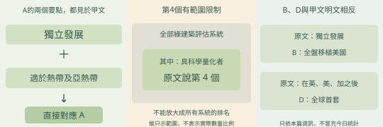

分享原卷｜第27題
完整原題
作答所需文章／材料
【甲文】 我國的綠建築是以臺灣亞熱帶高溫高溼氣候為基礎，再掌握國內建築對生態、節能、減廢、健康的需求特性所訂定。現今全世界約有29套的綠建築評估系統，臺灣是僅次於英國、美國及加拿大之後，第4個實施具科學量化的綠建築評估系統，同時也是目前唯一獨立發展且適於熱帶及亞熱帶的評估系統。 「綠建築」具體表現人與自然融合共生的態度，以建立舒適、健康及環保的居住環境，讓地球和我們的家園邁向永續發展。 【乙文】 臺灣綠建築評估系統包含以下九大評估指標：| 指標 | 內容 |
|---|---|
| 綠化量 | 以生態綠網、小生物棲地、植物多樣性、土壤生態、照明光害等五項生態領域評估，減少溫室效應。 |
| 基地保水 | 建築基地涵養水分及儲集滲透雨水能力。基地保水愈佳，雨水涵養愈好，益於土壤內生物的活動，對生態有一大助益。 |
| 生物多樣性 | 保全「自然界之分解者」、「綠色植物等生產者」以及「初級生物消費者」的生存空間。 |
| 日常節能 | 主要為建築外殼強化、空調設計減量、高效率照明設計等方式進行限制，有效節能。 |
| 室內環境 | 以對人體健康之音環境、光環境、通風換氣與室內建材裝修等四部分作為主要評估對象。 |
| 水資源 | 設置省水設備及利用雨水儲集或中水利用設施等方式提升節水效率、增加雨水滯留以增加水資源的使用。 |
| 汙水垃圾改善 | 設置汙水處理設施或汙水下水道；設置充足垃圾處理運輸空間及資源分類回收系統。 |
| 二氧化碳減量 | 以減少生產與運輸兩階段的二氧化碳排放量為目標。 |
| 廢棄物減量 | 降低營建廢棄物，並針對施工空氣汙染進行控管。 |
根據甲文內容，關於臺灣綠建築評估系統的敘述，下列何者最恰當？
(A) 是一套獨立發展且適用熱帶與亞熱帶的綠建築評估系統
(B) 為了實踐人與自然共生，因而全盤移植美國的評估指標
(C) 實施時間僅次於英、美、加三國，高居全世界第四之長
(D) 是全球首套針對溫室效應所研發出來的具科學量化系統
先想一想，再查看答案、解說與原圖
原卷作答：未見本題可辨識的原卷作答
正確答案：A。是一套獨立發展且適用熱帶與亞熱帶的綠建築評估系統。
逐項解析
| 選項與原句 | 判讀 | 句意與判斷理由 |
|---|---|---|
| (A) 是一套獨立發展且適用熱帶與亞熱帶的綠建築評估系統 | 應選 | 獨立發展及適於熱帶、亞熱帶都直接見於原文。 |
| (B) 為了實踐人與自然共生，因而全盤移植美國的評估指標 | 不選 | 文章以臺灣氣候與國內需求訂定，且稱獨立發展，並非全盤移植。 |
| (C) 實施時間僅次於英、美、加三國，高居全世界第四之長 | 不選 | 第4個限定具科學量化系統，不能直接擴張為全世界全部系統的實施時間排名。 |
| (D) 是全球首套針對溫室效應所研發出來的具科學量化系統 | 不選 | 原文明說在英、美、加之後，並非全球首套。 |
詳細說明與解題步驟
一、先找可直接對應原文的選項
甲文說臺灣的系統是獨立發展，且適於熱帶與亞熱帶，與A的敘述相符。B的全盤移植美國和獨立發展相反；D的全球首套也與文中先有英、美、加等系統相反。
二、C要注意比較的範圍
原文的第4個有「具科學量化」這項限制，C卻說高居全世界第四之長，沒有保留該範圍，不能據甲文斷定所有綠建築評估系統的歷史長短排名。
三、先後與多久並非完全無關
若比較的是同一群系統、都持續實施，而且在同一時點計算，第4早開始的系統確實可能就是第4久，讀者的這個疑問有道理。排除C的重點應是原文限定具科學量化，不能擴張到全世界全部系統，而不是硬說先後順序與實施多久必定無關。A直接對應明文，最為穩妥。
本題的29套及目前等語，是文章提供的資訊，作答依甲文判斷。

① 獨立發展、適於熱帶亞熱帶，直接對應A
甲文明寫臺灣系統獨立發展，且適於熱帶與亞熱帶。A把這兩個要點放在一起，兩者都有文字依據。閱讀題先找能直接對應原文的敘述，不先加入自己推測的排名或制度來源。
② C漏掉具科學量化的比較範圍
原文第4個實施，限定的是具科學量化的系統；C卻擴成全世界系統實施時間第四長。關鍵是比較範圍被放大，不是先後與多久永遠無關。相同群體、持續實施且同時點比較，兩者可以有關。
③ B的全盤移植、D的全球首套均不合文意
原文稱獨立發展，B說全盤移植美國，方向相反；甲文已說在英、美、加之後，D說全球首套，也不合。文中29套、目前等資訊仍屬文章情境，不拿來宣稱今天最新制度統計。
④ A對應明文，C不能擴張具科學量化的範圍
答案 A：獨立發展且適用熱帶與亞熱帶
- 兩個條件都能直接在甲文找到。
- C不能省掉具科學量化的範圍限制。
- B、D與明文相反；不拿文章數據當今日現況。
核對註記：已依原卷或完整文字核對並獨立解題；對應教材課次未確認，歸綜合。
原圖（僅本題）